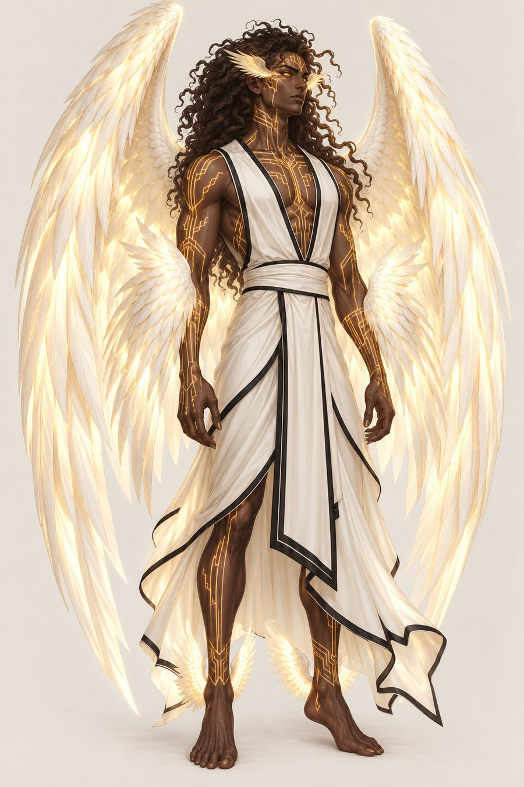

The Holy Princes
The Ashraatraal: seven sacred generals, the oldest Vatrajarə in existence. There were nine once.
This section follows the Aempaera and Ishphaeno reference documents. Lines without a tag are settled. Tags mark anything less settled. Names are given in Vatrahu unless a Vatraxu form is named.
Each Holy Prince commands a regiment of Paev and Laer Vatrajarə. They are AshraaPaev, generals with three pairs of wings, and their back pair, a sign of Jangshe’s and Ashraaha’s favour, is the largest of any Vatrajarə below the rank of Theraapaev. In Vatraxu they are Zashraatraal. Their title Ashraatraal means holy princes, and their council is the Ashraakaenru (Zashraakaenru in Vatraxu). Mikael, who leads them, also holds the title Uthaartraal, the leader-prince. Their motto is Taal vatra lan, “We trust in him.” See Vatrahu and Vatraxu.
The seven
| Prince | Domains | Human height | True form | Pattern of markings | Aura on Earth |
|---|---|---|---|---|---|
| Mikael | Justice, Humility, Faith, Charity | 6'3" to 6'5" | 7'5" to 8' | Stepped frets, angular and bilateral | Not recorded |
| Kaprijael | Faith, Kindness, Diligence | 6'1" | 7'5" to 8' | Lines radiating from the wrists | Not recorded |
| Ravael | Temperance, Healing, Guidance, Humility | 5'11" to 6'0" | 7'5" to 8' | Lines radiating from the breastbone like a heartbeat | Nearby tissue heals faster |
| Uthrijael | Wisdom, Retribution, Chastity | 6'0" | 7'5" to 8' | Concentric spirals at the temples | Shadows withdraw |
| Kamael | Fortitude, Love, Charity | 5'10" | 7'5" to 8' | Chevrons, gathered on the chest | A sense of being seen and cared for, which unsettles those unused to it |
| Thovijael | Patience, Beauty, Hope, Wisdom | 5'8" | 7'5" to 8' | The most ornate and fine-lined | Colours look more vivid |
| Thakjael | Loyalty, Righteousness | 6'1" | 7'5" to 8' | Clean parallel lines | Not recorded |
The Ashraatraal’s markings are the most complex of any Vatrajarə and the hardest to hide. Their hair moves in true form with particular intention, answering will as well as feeling.

Mikael
Mikael leads the Ashraatraal as Uthaartraal and is the only living Theraapaev, with four pairs of wings: feet, wrists, back and eyes. He alone can command the Theraav chorus. He wears only white and black in human form, and his disguise is always slightly insufficient by choice.
The two who fell
The council was nine until the Krang Uthjook. Thamael, the Ashraatipaev and the highest of the Holy Princes, and Haelael, a Theraapaev, led the opposition and lost. They fell and took new names: Thamael became Sadok, and Haelael became Lioshe. See Krang Uthjook and TeSharani.
| Before the Fall | After the Fall | |
|---|---|---|
| Thamael, now Sadok | Ashraatipaev, the only one ever. Five pairs of wings: feet, wrists, back, eyes and temples. | See the war page. |
| Haelael, now Lioshe | Theraapaev, with four pairs of wings, and the identical twin of Mikael. Same face, same body, same divine pattern. | Silvery blond in true form, as the gold of his origin cooled through the Fall. Two tails and blackened wings. |
In human form the twins are told apart by style and energy alone. Mikael wears white and black. Lioshe wears colour, texture, earth tones and silver chains. Both suppress only as much as they need to pass. The same pattern, one expressing Justice and the other Free Will. Decided
How mortals remember them
Human scholars who read the Ashraama faith as Abrama meet the Ashraatraal as the seven princes of heaven. Some traditions keep a memory of the two who fell and count eight or nine.
Open questions
- Aura effects for Mikael, Kaprijael and Thakjael, which are not recorded Open
- Where the Holy Princes serve outside Aempaera, beyond the guard rotations at Ashraaħəmavel Open